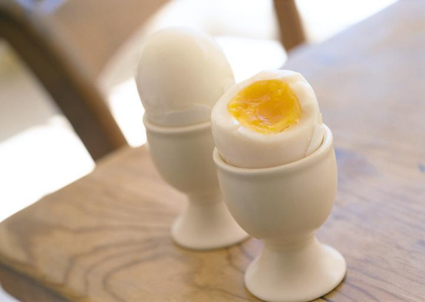

Boiled Eggs
Description
Hard-boiled eggs are a versatile food, welcome in salads, on their own, or as the base for curried or deviled eggs.
Ingredients
- 2 to 4 boiled eggs
- 1/2 pot of water
Steps
- Bring water to a boil on medium temperature. Make sure the water covers the depth of the eggs.
- Gently lower the eggs into the boiling water using a slotted spoon, without cracking them.
- Use a timer. You want exactly eight minutes for two eggs. When finished, remove with slotted spoon.
- Run the eggs under cold water for one minute to help prevent a green ring from forming around the yolk.
- Crack on the fat end of the egg and shell it under cold water, either after cooking or later if you want to refrigerate them.